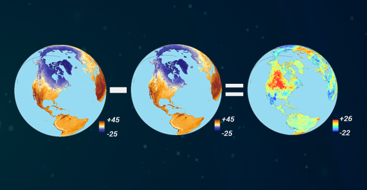
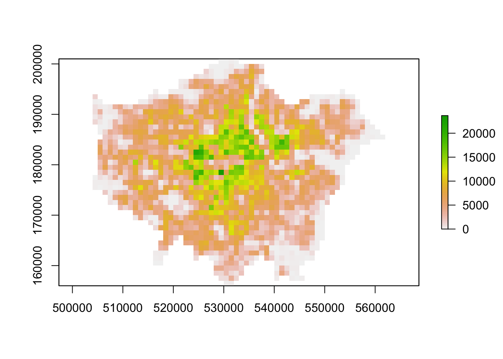
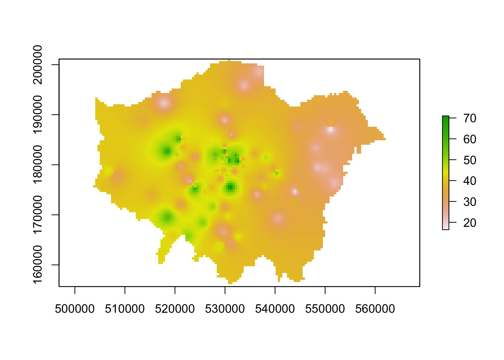

9 Rasters, Zonal Statistics and Interpolation
Welcome to Week 9 in Geocomputation!
This week, we’ll be covering two topics: 1) Raster data and 2) Interpolation.
So far, the majority of our module has focused on the use of vector data and table data (that we’ve then joined to vector data). This week, we switch it up by focusing primarily on raster data and its analysis.
As you saw last week, our analysis of point data using the Kernel Density Estimation created a raster dataset that we needed to process for further analysis and visualisation.
This week’s focus on Interpolation will also yield a raster dataset from our analysis of point data - therefore we’ll start this week with a focus on raster data and its applications, including the analysis of several raster datasets together using map algebra.
We’ll then see how we can use different interpolation methods to generate raster data from point data. These techniques are split into two categories, deterministic and geostatistical, and we will look to make sure we understand the difference between the two.
Within the Extension, we’ll take a quick look at satellite imagery and how and why we use the tm_rgb() function to map raster datasets that have multiple bands (rather than the tm_raster() function), including the OpenStreetMap basemap from last week.
Week 9 in Geocomp
Welcome video and lecture videos to be updated on Wednesday morning.This week’s content introduces you to raster data, map algebra and interpolation.
I told you much of spatial analysis seems like spatial maths!
We have three areas of work to focus on:
- Understanding raster data and map algebra
- Applying different interpolation techniques in R using the
rasterlibrary - Extension: Using raster and vector data together through zonal statistics
This week’s content is split into 4 parts:
- Workshop Housekeeping (10 minutes)
- Raster Data (40 minutes)
- Interpolation: Theory and Techniques (40 minutes)
- Interpolation: Application in R (60 minutes)
- Extension: Single-Value Rasters v. Multi-Band Imagery (5 minutes)
This week, we have 2 short lectures and 2 assignments within this week’s main workshop content.
Learning Objectives
By the end of this week, you should be able to:
- Use, analyse and visualise raster data in R confidently.
- Utilise map algebra to analyse two or more raster datasets together.
- Utilise vector and raster data together using zonal statistics.
- Explain what interpolation is and the different techniques we can use.
- Implement different geostatistical techniques in R.
- Utilise vector and raster data together using zonal statistics.
After first looking at population change in London using raster data, we will then look at generating pollution maps in London from individual point readings taken from air quality monitoring sites across London.
To complete this analysis, we’ll be using several new datasets:
- Population rasters for England: Raster datasets containing estimated population counts for England in 2001 and 2011 at a spatial resolution of 1km.
- NO2 Readings across London: A (csv) dataset contain readings of NO2 for individual air quality monitoring sites in London.
We’ll also use our London Wards (2018) adminstrative boundaries dataset at various points within both practicals.
Workshop Housekeeping
Let’s get ourselves ready to start our lecture and practical content by first downloading the relevant data and loading this within our script.
Setting up your script
Open a new script within your GEOG0030 project (Shift + Ctl/Cmd + N) and save this script as
wk9-pollution-raster-analysis.r.At the top of your script, add the following metdata (substitute accordingly):
Dependencies (aka libraries)
Now we’ll install the libraries we need for this week.
In addition to those libraries you should now be familiar with, we will need to install and use:
rgdal, preferably version 1.4-8: for under-the-hood spatial data managementrgeos, preferably version 0.5-2: for more under-the-hood spatial data managementgstat: to complete our various interpolation techniquesopendata: to download our pollution data directly from London Air
We’ll also be using spatstat as an alternative for gstat for those of you who have issues running this code.
To download the specific versions of rgdal and rgeos, first install the package devtools (install.packages("devtools")), then use the following code:
install_version("rgdal", version="1.4-8")install_version("rgeos", version="0.5-2")install_version("gstat", version="2.0-6")
This should install the correct version of the packages you’ll need for today. You can double-check this by looking inthe Packages window after installation.
If you already have these packages installed (which it is quite likely you will) and they are a newer version than the version listed above, you may need to uninstall these packages using the Package window if you want to run the gstat code. However, do wait until you’re at relevant section in the practical to see if this is necessary.
Remember to use the install.packages("package") command in your console.
- Within your script, add the following libraries for loading:
# Libraries used in this script:
library(tidyverse)
library(here)
library(magrittr)
library(sf)
library(tmap)
library(RColorBrewer)
library(raster)
library(sp)
library(rgdal)
library(rgeos)
library(gstat)
library(spatstat)
library(openair)Remember to select the lines of code you want to run and press CMD (Mac)/CTRL(Windows) + Enter/Return - we won’t remind you to run each line of code in the remainder of the practical sessions.
Datasets for this week
1) Population Data
For the first part of this week’s practical material we will be using raster datasets from the Population Change and Geographic Inequalities in the UK, 1971-2011 (PopChange) project.
In this ESRC-funded project, researchers from the University of Liverpool created raster population surfaces from publicly available Census data (1971, 1981, 1991, 2001, 2011). These population surfaces are estimates of counts of people, displayed within a regular grid raster of a spatial resolution of 1km. These surfaces can be used “to explore, for example, changes in the demographic profiles of small areas, area deprivation, or country of birth” (PopChange, 2021).
To enable this, the researchers have created several categories of rasters, including: Total Population, Population by Age, Population by Country of Birth, Population by Ethnicty etc.
This week we will use the Total Population datasets.
Downloading Total Population Datasets from PopChange
To access data directly from the PopChange website requires a simple registration for log-in, you can then navigate through the datasets and choose those you would like to download.
For this week, I’ve gone ahead and downloaded the data for you, which you can access directly from the links below:
| PopChange Raster | File Type | Link |
|---|---|---|
| Population surface GB 2001 - Total Population | asc |
Download |
| Population surface GB 2011 - Total Population | asc |
Download |
Once downloaded, copy over these files into your data –> raw –> population folder.
Note, I went ahead and found the metadata file for these datasets which confirm that “each ASCII GRID is in BNG coordinate system”, therefore we will not need to worry about checking our data’s CRS this week.
2) Pollution Data
For the second part of this week’s practical material, we will explore several methods of interpolation by looking at air pollution in London by getting data from the Londonair website.
Londonair is the website of the London Air Quality Network (LAQN), and shows air pollution in London and south east England that is provided by the Environmental Research Group of Imperial College London.
The data are captured by hundreds of sensors at various continuous monitoring sites in London and the south east of England. The best of it all? The data are publicly available for download - and we can use an R package to directly interact with the data without needing to download it!
The openair R package enables us to import our data directly using the importMeta() and importKCL() functions. To understand these functions, I’d recommend looking at the documentation of the openair package so that you get an idea why we use them in our code below!
However, there is one issue with this package. Because openair contains C++ code, a compiler is needed (C++ is a compiled language, which was briefly covered in Week 4 - you don’t really need to know all the details about this at this stage in your programming career/for Geocomputation). For Windows, for example, Rtools is needed. Depending on your system and configuration this can sometimes be a hassle and simply not worth the various instructions I’d probably need to write out to help each of you.
Fortunately, even though packed with functionality, we will only use openair to download all the air pollution data we are interested in: in case you cannot get openair to work on your computer, I’ve provided a direct download of the dataset instead. However, I’ve gone ahead and provided the code in the relevant section if you’d like to try ti use the library to interact with the data - a small warning is that it took over 10 minutest to download the data required for our practical.
| Pollution Data | Type | Link |
|---|---|---|
| Air pollution in London for 2019 (NO2) | csv |
Download |
Once downloaded, copy over these files into your data –> raw –> pollution folder (i.e. create a new pollution folder for your dataset!).
3) London Ward Data
We’ll also be using our London Ward data (2018), so make sure you haven’t deleted this from your raw folder ;) .
Raster Data
In the previous weeks, we have predominantly worked with vector data and/or table data that we then join to vector data for analysis.
However, depending on the nature of your research problem, you may also encounter raster data.
Each of these GIS models has its own advantages and disadvantages, that were briefly explored in Week 2 of our module.
If you remember, the main difference between vector and raster models is how they are structured.
Our vectors are represented by three different types of geometries: points, lines and polygons. We’ve used point data in the form of our stations and bike theft, and polygons in the form of our Ward and Borough boundaries.
In comparison, our raster datasets are composed of pixels (or grid cells) - a bit like a photograph. This means that a raster dataset represents a geographic phenomemon by dividing the world into a set of rectangular cells that are laid out in a grid. Each cell holds one value that represents the value of that phenomena at the location, e.g. a population density at that grid cell location. In comparison to vector data, we do not have an attribute table containing fields to analyse.
All analysis conducted on a raster dataset therefore is primarily conducted on the cell values of a raster, rather than on the attribute values of the observations contained within our dataset or the precise geometries of our dataset, as we’ve seen in the last two weeks, with our vector data.
Probably one of the most common or well-known types of raster data are those that we can derive from remote sensing, including satellite and RADAR/LIDAR imagery that we see used in many environmental modelling applications, such as land use and pollution monitoring.
However, over the last few years, raster data has increasingly being used within spatial data science applications. For example, Worldpop and Facebook have created raster-based estimates of population density (and other variables), that you can access openly via their respective links.
Beyond their benefits in computational requirements and even, for some geographical phenomena, visualisation capacity and capabilities, a key advantage of raster data is that is relatively straight-forward to standardise data across space (i.e. different countries) and across variables (i.e. different datasets) to enable greater compatibility and easier comparison of datasets than its vector counterparts. We have, for example, seen that we can run into issues quickly even with data on London, as our ward boundaries have changed so frequently even over just the last ten years.
This standardisation can occur as raster data has:
- An origin point from which the grid extends and then a precise number of columns and rows within said dataset;
- A specifc spatial resolution which refers to the cell size of the raster dataset, e.g. are the grid square 100m x 100m, 1000m x 1000m etc?
From these two values, it is possible to calculate the size of our raster (number of columns X spatial resoution by the number of rows X spatial resolution) as well as * snap future rasters (or resample current rasters) to both the spatial extent and the spatial delineation of one raster dataset (i.e. ensure the cells between the rasters will align with one another).
This enables us to create rasters that essentially “line up with one another” - and by doing so, we areable to complete specific calculations between our raster datasets known as Map Algebra.
What is Map Algebra?
Map algebra is exactly what it sounds like - it basically involves doing maths with maps!
The key difference is that, within spatial analysis, it only applies to raster data, hence it’s name as either map algebra or raster math.
Map algebra is a set-based algebra for manipulating geographic data, coined by Dana Tomlin in the early 1980s.
Map algebra uses maths-like operations, including addition, subtraction and multiplication to update raster cell values - depending on the output you’re looking to achieve.
The most common type of map algebra is to apply these operations using a cell-by-cell function. Conceptually, this approach will directly stack rasters on top of one another and complete the mathematical operations that you’ve supplied to the cells that are aligned with each other.
These operations might include:
- Arithmetic operations that use basic mathematical functions like addition, subtraction, multiplication and division.
- Statistical operations that use statistical operations such as minimum, maximum, average and median.
- Relational operations, which compare cells using functions such as greater than, smaller than or equal to.
- Trigonometric operations, which use sine, cosine, tangent, arcsine between two or more raster layers.
- Exponential and logarithmic operations that use exponent and logarithm functions.
But it is also possible to run (some of) these operations at a different scale.
Map algebra functions can be applied using for four different approaches:
- Local: The simplest approach - completing functions on a cell-by-cell basis.
- Global: Used to apply a bulk change to all cells in a raster using a function, e.g. add 1 to all values in a raster, or calculate the euclidean distance each cell is away from a specifc cell.
- Focal: Apply a function to a set of neighborhood values to calculate the output for a single cell, e.g. using a moving window, such as kernel.
- Zonal: Apply a function to a group of cells within a specified zone (zone can be provided as a raster or vector format).
The utilisation of these functions can enable many different types of specialised raster analysis, such as recoding or reclassifying indivdual rasters to reduce complexity in their data values, generating the Normalised Difference Vegetation Index for a satellite imagery dataset, or calculating Least Cost Estimate Surfaces to find the most “efficient” path from one cell in a raster to another.
Furthermore, using multiple raster datasets, it is possible to combine these data through our “mathemetical overlays”, from the basic mathematical operations mentioned above to more complex modelling, such as prediction using Bayes theorem.
The results of these overlays have many applications, including identifying suitable locations for placing a new school or modelling risk to viruses, such as the Zika virus (e.g. Cunze et al, 2019 and Santos & Meneses, 2017 for those of you interested in this application), and, of course, as highlighted above, population density.
Our first lecture for this week provides raster data and map algebra.
Lecture: Raster Data and Map Algebra
We do not have a huge amount of time this week to look into map algebra fully - including the many applications mentioned above. But for those of you interested in environmental modelling or more complex data science specialising in Bayesian modelling, there are many tutorials and videos out there that can explore these in more detail.
GIS Geography’s explanation on Map Algebra
The majority of the images on our lecture slides today on Map Algebra are taking from GIS Geography’s excellent article on “What is Map Algebra?”.
This website is an excellent resource for simple explanations of basic GIS concepts such as Map Algebra and, as we’ll see later on in the workshop, our different interpolation techniques.
Alternatively, Manuel Gimond’s Lecture Notes on Map Algebra are also an excellent resource, as usual.
To get to grips with the concept of Map Algebra, we will finally conduct the population change analysis I mentioned at the start of the module, using the first set of raster data we downloaded first.
Analysing Population Change in London using Map Algebra
The first part of our practical this week will look at Map Algebra in action - and some simple raster data process - by looking to analyse population change in London between 2001 and 2011 (i.e. the formative years of your very own childhood!).
To do so, we’re going to complete a very simple bit of map algebra - we will substract the values of the 2011 raster dataset from the 2011 raster dataset and then map the resulting values, i.e. population change.
One question to think about - and reflect on as we move forward with this practical - is that we already know that small-area counts of people in a variety of population subgroups are publicly released for each Census and via the Mid-Yeat estimates, so why was it necessary to create these raster population surfaces?
Before we open up the data in R, try to have a ‘non-spatial sneak peak’ at the .asc file by opening it in a normal text editor, for instance, TextEdit on Mac OS or NotePad on Windows.
What you will notice is that the asc file, which is an exchange format, is in very fact a flat plain text file!

Reflecting on what we’ve just read about rasters and their format, what do you think the first few lines of the asc file, when opened with a text editor, mean?
Loading and Processing Raster Data
Let’s get started and take a look at our data - first we need to load it into R (using the raster library) and then we can quickly plot it using the base R plot function.
- Load our two population rasters and plot using R’s base function:
# Load our two raster datasets
pop_2001 <- raster("data/raw/population/5a_ascii_grid2001_Total_Population_UsRsPopA.asc")
pop_2011 <- raster("data/raw/population/5a_ascii_grid2011_Total_Population_URPopAll.asc")
# Inspect 2001 - this can be a little slow, especially for large raster
plot(pop_2001)

Note, if your maps have struggled to plot, do not worry - we’re going to go ahead and reduce the size of our rasters ASAP! You may however need to terminate and/or restart R if it has got stuck trying to load your raster maps.
You should see that whilst your maps look very similar, the legend certainly shows that the values associated with each cell has grown over the 10 years between 2001 and 2011 - we see our maximum increase from 15,000 people per cell to 20,000 people per cell.
Now we could complete some more simple analysis on our raster dataset (e.g. extracting basic descriptive statistics for each), but we’ll move forward with our London-focused analysis instead.
Now we have our raster data loaded, we want to reduce it to show only London using our London Ward shapefile.
To do so, we will use a combination of two techniques - the crop() function we came across last week - and then using a mask to refine our raster further.
If you remember using the crop() function last week on our OSM basemap, it will crop any raster by the overall spatial extent or rather bounding box of the y dataset. As a result, the raster returned will be rectangular (or square) in shape - and not cropped to the precise geometry of the y dataset that we see in the use of the st_intersections() function that we use with vector data.
To reduce a raster to the (almost) precise geometry of the y dataset, we need to instead use a mask approach. The reason why I say “almost” is because a mask will only work when using two raster datasets. As a result, we need to turn our y dataset (in our case, the London Ward shapefile) into a raster - a process simply known as “rasterize” or “rasterizing”.
This process of rasterizing will turn our polygon dataset into a raster and thus simplify/alter the geometry of our dataset to coerce it into a grid-based dataset:

As a result, it will be an “almost” precise geometry.
To ensure our resulting raster of our London Ward shapefile matches the spatial delineation (aligns our cells) and resolution (make cells the same size) of our population rasters, instead of separately rasterising (using the rasterise() function) our London Ward shapefile and then masking (using the mask() function) our rasters by the resutling raster, we can combine this into one, still using the rasterise() function but adding the london population rasters into the function and the mask parameter set to True.
Let’s go ahead and generate our output and see this code in action.
- Load our London Ward shapefile and use this to first crop, then mask our population rasters (through rasterising):
# Load london ward data as per usual
london_ward <- read_sf("data/raw/boundaries/2018/London_Ward.shp")
# Crop raster to extent greater london
lonpop_2001 <- crop(pop_2001, london_ward)
lonpop_2011 <- crop(pop_2011, london_ward)
# Rasterise London Ward, and mask each pop raster by this new raster using
# mask=True parameter
lonpop_2001 <- rasterize(london_ward, lonpop_2001, mask = TRUE)
lonpop_2011 <- rasterize(london_ward, lonpop_2011, mask = TRUE)
# Plot the 2001 London population raster
plot(lonpop_2001)
You should now have generated two plots for each year - you can quickly flick between the two and see there is evidence of population change between our two datasets.
We could go ahead and make a few nicer tmaps of our current datasets, but we’ll save this until we’ve managed to process our population change variable as well.
Calculating Population Change
Now we have our two London population rasters, we’re now ready to go ahead and calculate population change between our two datasets - and the code in R to do so is incredibly simple: it’s simple subtraction!
- Subtract our 2001 population raster from our 2011 population raster:
# Subtract 2001 population from 2011 population to get population change
lonpop_change <- lonpop_2011 - lonpop_2001
# Plot the results
plot(lonpop_change)We now have a raster that shows us population change in London - and to our surprise, there are areas in which population has actually declined.
We, again, could go ahead and make a few nicer tmaps of our current datasets now, but I’m still not happy with our final dataset. We can utilise some of the focal and zonal functions from our map algebra catalogue to further “enhance” our understanding of population change in London.
Analysing Population Change
To further analyse our population change raster, we can create a ‘pseduo’ hotspot map of our lonpop_change raster by calculating a smoothed version of our raster using the focal() function.
This will enable us to see more clearly where there are areas of high counts (surrounded by areas of high counts) and vice versa - just like our KDE analysis of bike theft last week.
Using the focal() function, we generate a raster that summarises the average (mean) value, using the fun= parameter set to mean, of the 9 nearest neighbours for each cell, using a weight matrix defined in our w parameter and set to a matrix (consisting of our cell with 3 rows and 3 columns as neighbours) as you’ll see in the code below.
- Calculate the smoothed estimation of our
lonpop_changeraster:
# Using a focal statistics (of 9 neighbours) to calculate smoothed raster
lonpop_smooth <- focal(lonpop_change, w = matrix(1, 3, 3), fun = mean)
# Plot results
plot(lonpop_smooth)Our areas of high population growth are now more visible in our dataset. Our areas of population decline are potentially not as stark, but are certainly still visible within our raster.
What do you think? Does this communicate population change better than our raw values?
We can also look to use zonal functions to better represent our population change by aggregating our data to coarser resolutions.
For example, we can reisze our raster’s spatial resolution to contain larger grid cells which will, of course, simplify our data, making larger trends more visible in our data - but of course, may end up obfuscating smaller trends.
We can resize our lonpop_change raster by using the aggregate() function and setting the fact= (factor) parameter to the “order” of rescaling we’d like (in our case, 2 times larger both width and height).
We then provide the fun= (function) by which to aggregate our data, in this case, we’ll continue to use the mean but we could in fact provide min or max depending on our future applications/analysis of our dataset.
- Aggregate our
lonpop_changeraster to a coarse spatial resolution, at an order of 2:
# Rescale raster and aggregate based on mean
lonpop_change_agg <- aggregate(lonpop_change, fact = 2, fun = mean)
# Plot resulting raster
plot(lonpop_change_agg)Another very common technique used in raster analysis via map algebra is the use of zonal statistics.
As outlined earlier, a zonal statistics operation is one that calculates statistics on cell values of a raster (a value raster) within specific zones that are defined by another dataset.
The zones can be provided by both raster and vector data - as a result, zonal statistics are a really useful tool if we need to aggregate data from a raster dataset for use within further analysis that primarily uses vector data, such as when we’re analysing data within administrative boundaries.
For example, in our case, we can aggregate the lonpop_change raster to our actual London Ward boundaries, i.e. calculate for each ward in our dataset, the average (or other function) population change, as determined by our raster.
We can, of course, use other functions other than the mean - what function you use will simply depend on your application. Esri has a great resource on how Zonal statistics works with other functions and raster data, found here.
- Aggregate our
lonpop_changeraster to our London Ward boundaries:
# Aggregate to administrative geography Note: the output is a vector that is
# forced to a SpatialPolygons object (not sf)
london_ward_pop <- raster::extract(lonpop_change, london_ward, fun = mean, sp = TRUE)
# Plot via tmap
tm_shape(london_ward_pop) + tm_polygons(col = "layer")We now have a vector dataset that we could go ahead and run many of the analyses that we’ve completed in Week 7, such as a spatial autocorrelation tests, to prove any of the visual analysis claims we might have made in our analysis of our raster above.
Furthermore, we can use this data within other analyses we might want to complete - for example, if we are using population change as a specific variable to analyse another dataset that is only available as a vector dataset / at the ward level.
Trying to calculate populaton change, particularly across decades as we have done here, is quite difficult with our Census and Mid-Year Estimates given the differences in our Ward boundaries and the impact this has when we try to join datasets from different years that then have different codes that we need to join by attribute.
Using raster data, such as these datasets, are a good workaround to these issues, but, of course, with any data processing, will add some level of uncertainty into our datasets.
Using Functions from different libraries within the same name
Whilst I’ve mentioned this before, I wanted to flag this again, particularly with the introduction of the raster package. As you’ve seen in the previous code, and in other practicals, many libraries (loaded packages) share the same function names.
This can be a problem when these packages are loaded in a same R session. For instance extract is not only the name of a function in the raster package, but also the name of functions in the magrittr and tidyr packages.
To ensure you are using the function that you think you are using, you can specify the package using the :: approach, as follows: library::function, e.g. tidyr::extract or raster::extract.
We have had a quick exploration of raster data and seen specific ways we can process the data (e.g. crop and mask to specific extents) as well as shown how we can use map algebra to process two datasets together.
There is of course so much more that you can do with these datasets and mathemetical functions that we just do not have time for in our workshop - but you’ll be able to find specific tutorials on how to utilise map algebra for specific applications online, if it ends being a suitable technique for your own future analysis.
Online Tutorials on Map Algebra and Raster Analysis
To further your understanding on Map Algebra and general spatial data processing (for both raster and vector data), one resource I can highly recommend you continue to work through is the Geocomputation with R online book by Lovelace et al (2020).
Chapters 4 and 5 give you a cohesive introduction to the many functions the sf and raster libraries contain and may proove to be of significant use for both your coursework or your Dissertation analysis.
We, of course, cannot cover everything in this course - or else our Workbook would be even longer than it is! Instead, we provide you with examples, as above, in the spirit that you’ll be able to utilise resources such as this online book to add to your analysis code as and when you need!
For now, I have a short theory-based assignment I’d like you to complete in time for next Week’s seminar.
Calculating the number of people in London underserved by public transport
The first assignment this week is a purely theoretical question:
How can we use a combination of the techniques we’ve used over the last few weeks to calculate the number of people in London underserved by public transport?
To answer the question, I would like you to think of a method using what you’ve learnt above in regards to map algebra and your use of point data in the previous weeks, to think about how we can calculate the number of people who are not within 400m euclidean distance walk of a bus, tube or train station in London.
I’ll ask for suggestions in our Seminar in Week 10. This is a prime example of how we can use mathematical raster overlays to complete spatial analysis that by using vector data alone is likely to be incredibly difficult.
Interpolation: Theory and Techniques
The second half of our workshop this week focuses on interpolation.
Spatial interpolation is the prediction of a given phenomenon in unmeasured locations.
There are many reasons why we may wish to interpolate point data across a map.
It could be because we are trying to predict a variable across space, including in areas where there are little to no data.
We might also want to smooth the data across space so that we cannot interpret the results of individuals, but still identify the general trends from the data. This is particularly useful when the data corresponds to individual persons and disclosing their locations is unethical.
To predict the values of the cells of our resulting raster, we need to determine how to interpolate between our points, i.e. develop a set of procedures that enable us to calculate predicted values of the variable of interest with confidence - and, of course, repetitively.
Within spatial interpolation, two approaches have developed: deterministic and geostatistical.
This week’s lecture outlines the difference between the two and explains how the two main techniques associated with each, Inverse Distance Weighted and Kriging, work to create our resulting surfaces.
We’ll now put these techniques into action by interpolating our air quality point data into a raster surface to understand further how air pollution varies across London.
Interpolation: Application in R
Before we get going within interpolating our pollution dataset, let’s first take a look at the distribution of the London Air monitoring sites in London:

What are your thoughts about the distribution of the sites? Do you think they’ll provide enough data for an accurate enough interpolation?
Ultimately, monitoring sites and the sensor stations present at them can be expensive to install and run - therefore, identifying the most important places for data collection will somewhat determine their location, alongside trying to create a somewhat even distribution over London. As we can see in the locations of the stations above, there are certainly some areas in London that do not have a station nearby, whilst others (such as central London) where there are many stations available.
When using interpolation, the distribution and density of our data points will impact the accuracy of our final raster - and we may end up with a level of uncertainty in the areas where data is more sparse, such as the north-west and the south-east of London.
Despite this, we can still create an interpolated surface for our pollutant of interest - we just need to interpret our final raster with acknowledgement of these limitations.
For this week’s practical, we’ll go ahead and use the Londonair’s data to study the levels of Nitrogen Dioxide (NO2) in London for 2019.
Why study Nitrodgen Dioxide levels?
For those of you unfamiliar with atmospheric gases and their relation to pollution, Nitrogen Dioxide is one of the main pollutants we monitor due to its adverse impacts on health.
Londonair provide an excellent guide on the different pollutants they monitor, with the following is directly extracted from the guide:
Nitrogen dioxide (NO2) is one of a group of gases called nitrogen oxides. Road transport is estimated to be responsible for about 50% of total emissions of nitrogen oxides, which means that nitrogen dioxide levels are highest close to busy roads and in large urban areas. Gas boilers in buildings are also a source of nitrogen oxides.
There is good evidence that nitrogen dioxide is harmful to health. The most common outcomes are respiratory symptoms such as shortness of breath and cough. Nitrogen dioxide inflames the lining of the lung and reduces immunity to lung infections such as bronchitis. Studies also suggest that the health effects are more pronounced in people with asthma compared to healthly individuals.
In recent years the average level of nitrogen dioxide within London has not fallen as quickly as predicted. This largely appears to be the result of diesel cars creating more nitrogen dioxide than was anticipated.
Nitrogen dioxide also reacts with hydrocarbons in the presence of sunlight to create ozone, and contributes to the formation of particles.
In addition to NO2, we could also extend our study to other pollutants to get a more cohesive picture of how pollution varies over London. Londonair collects data on the main pollutants monitored in London: carbon monoxide (CO); nitrogen dioxide (NO2); ground level ozone (03); particles (PM10); sulphur dioxide (SO2).
We will access data directly from Londonair that contains readings for the various Monitoring Locations shown above. The data will be provided to us either as a “served” database (via the openair library) or via the csv provided for download. Either approach will provide us with a dataframe that contains the coordinates of these Monitoring Locations (i.e. a potential point data) alongside the readings taken for each of these Locations the entirety of 2019.
Once we have our data loaded and processed in the right format, we will start interpolating our data using at first two deterministic models: 1) Thiessen Polygons and 2) Inverse Distance Weighting (IDW). Next, we will then look at how we can conduct a Geostatistical interpolation through Ordinary Kriging.
Loading and Processing Pollution Data in R
Option 1: Import data using openair
Let’s get started by importing our data using the functionality provided by the openair package or, alternatively, reading in the data you downloaded above.
Remember, you should have installed and loaded the openair package during our housekeeping part to make this work!
- Import our data from Londonair using the
openair:
I will leave this code here as our example - but even for my connection, this took over 10 minutes to run. As a result, I’d advise using Option 2 and read in the zipfile.csv.
# Option 1: get data using openair package
# Import all monitoring sites using the importMeta function
sites <- importMeta(source='kcl',all=FALSE)
# Import pollution data for 2019 for all monitoring sites // this will take 5-10 minutes
# If you have a poor internet connection or slow computer, I'd recommend not using this approach - but at least you can see its possible in R!
pollution <- importKCL(site=c(sites$code), year=2019, pollutant='no2', meta=TRUE)
# Filter out NA values for nitrogen dioxide
pollution <- filter(pollution,!is.na(no2))If you do run the above code, you should end up with 995 sites (i.e. we are taking data from 995 individual monitoring stations) - setting our all parameter to FALSE means that only the site code, site name, latitude and longitude and site type are imported. Setting all = TRUE will import all available meta data and provide details (when available) or the individual pollutants measured at each site.
For pollution, you’ll see messages that warn us the certain sites do not exist, e.g. ‘XXX_2019 does not exist - ignoring that one’ message. We are essenitally just forcing a download for all possible sites, irrespective of whether the monitoring site was active in 2019. As you’ll see, quite a few of the sites appear to not exist in 2019.
If your code is still running after 10-15 minutes, I’d highly recommend terminating the process and simply reading in the data as below.
Option 2: Import data from csv
As the openair download does take a signinifcant amount of time to download, you are welcome to use the csv I have processed for you - you can download the csv from the 2) Pollution Data section.
- Import our data directly from the csv within the zip folder you have downloaded:
# Option 2: using downloaded csv file
# Read in downloaded data As the file is quite large, we will read it directly
# from zip
pollution <- read_csv("data/raw/pollution/no2_london_2019.zip")
# pollution dataframe dimensions
dim(pollution)## [1] 1596509 7Reading in the csv might take a little time - we have 1,596,509 observations with 7 variables - that’s quite a substantial dataset!
Let’s take a look at why it’s so large.
- Look at the first five rows of our dataframe:
## # A tibble: 6 x 7
## date no2 site code latitude longitude site_type
## <dttm> <dbl> <chr> <chr> <dbl> <dbl> <chr>
## 1 2019-07-01 12:00:00 14.5 Southwark - Towe… SK8 51.5 -0.0782 Roadside
## 2 2019-07-01 13:00:00 16.1 Southwark - Towe… SK8 51.5 -0.0782 Roadside
## 3 2019-07-01 14:00:00 16.2 Southwark - Towe… SK8 51.5 -0.0782 Roadside
## 4 2019-07-01 15:00:00 21.8 Southwark - Towe… SK8 51.5 -0.0782 Roadside
## 5 2019-07-01 16:00:00 19.7 Southwark - Towe… SK8 51.5 -0.0782 Roadside
## 6 2019-07-01 17:00:00 17.5 Southwark - Towe… SK8 51.5 -0.0782 RoadsideInteresting - we can see that in our first five rows we have data for the same site - and if we look at the date field, we can see we have a reading observation for every hour! With 24 hours in the day, 365 days in a year and potentially hundreds of sites, it should therefore be of no surprise that we have such a big csv!
In the end, for this practical, we only want to create one raster - so to make our data more useable, we will go ahead and aggregate the data and get the average NO2 value for each monitoring site over 2019.
We could, of course, look to return the max or min, or, for example, create monthly averages instead (and create 12 rasters!) - there’s a lot we could do with just this single dataset beyond what we’ll look at today!
- Use the
dplyrlibrary functions to return the mean NO2 value for each monitoring site over 2019. Let’s also make sure that we retain the latitude and longitude of our monitoring sites:
# Aggregate data to unique latitude and longitude combinations, remove monitoring
# sites without coordinates Summarise the no2 by the mean
avg_pollution <- pollution %>% group_by(latitude, longitude) %>% summarise(no2 = mean(no2)) %>%
filter(!is.na(latitude | longitude))
# Return the first five rows of our new avg_pollution dataframe
head(avg_pollution)## # A tibble: 6 x 3
## # Groups: latitude [6]
## latitude longitude no2
## <dbl> <dbl> <dbl>
## 1 49.8 -7.56 35.6
## 2 50.4 -4.14 17.5
## 3 50.7 -1.83 11.5
## 4 50.8 0.284 15.7
## 5 50.8 0.181 7.23
## 6 50.8 0.272 11.4We should now see that we only have our (hopefully unique!) latitude and longitude coordinates and the average NO2 value associated with each.
Our histogram also shows us the general distribution of our values - we can see that we have a slight positive skew to our dataset.
To use this data within our different interpolation methods, we’ll need to transform our data into a point spatial dataframe using the st_as_sf() function that we’ve come across before.
One thing you should notice is that the latitude and longitude are, of course, in WGS84 - therefore, we’ll need to reproject our resulting spatial dataframe into British National Grid. We’ll also make sure that all of our points are within our London Ward extent, using the st_intersection() function from the previous week.
Also, as we’re yet to make any pretty maps this week, we’ll go ahead and deploy our proportional symbols map code on our resulting spatial dataframe to see the distribution of our variables spatially.
All this code must be getting pretty familiar to you by now!
- Create a spatial dataframe containing our London monitoring sites and their average NO2 reading - then map the data:
# load London Wards for reference map as we've already done this, I've commented
# it out - but if you are running this practical separately to above you might
# need to reload it in! london_ward <- <-
# read_sf('data/raw/boundaries/2018/London_Ward.shp')
# Create a point spatial dataframe and project into british national grid (epsg
# 27700)
pollution_points <- st_as_sf(avg_pollution, coords = c("longitude", "latitude"),
crs = 4326)[, 1] %>% st_transform(27700)
# Ensure all points are within the boundaries of Greater London We could have
# directly pipe our output above into this, but now we have all points in one
# spatial dataframe as well
lonpollution_points <- pollution_points %>% st_intersection(london_ward)## Warning: attribute variables are assumed to be spatially constant throughout all
## geometries# Create a proportional symbols map
# Ensure tmap is in the plot mode
tmap_mode("plot")
# Plot our London wards in grey
tm_shape(london_ward) + tm_polygons(palette = "grey", border.col = "white") + # Plot our pollution_points as bubbles, using the NO2 field to determine size
tm_shape(lonpollution_points) + tm_bubbles(size = "no2", col = "mediumorchid", style = "pretty",
scale = 1, border.col = "white", title.size = "Average NO2 ug/m3 reading in 2019") +
tm_layout(legend.position = c("left", "top")) + # Add a north arrow
tm_compass(type = "arrow", position = c("right", "top")) + # Add a scale bar
tm_scale_bar(breaks = c(0, 5, 10, 15, 20), position = c("left", "bottom")) + # Add our data statement
tm_credits("Air quality data from London Air")Our proportional symbols map already tells us a little about our dataset - we can see that NO2 levels are much higher towards the centre of London, although we can see some anomalies in the south-west, for example.
But we can also see how and why a smoothed surface of our data could be really useful for further interpretion - and this is where interpolating our data comes in!
Thiessen Polygons: Basic Deterministic Approach
The first step we can take to interpolate the data across space is to create Thiessen polygons.
Thiessen polygons are formed to assign boundaries of the areas closest to each unique point.

Therefore, for every point in a dataset, it has a corresponding Thiessen polygon.
Thiessen versus Voronoi - are they the same thing?
The quick answer to this is YES! You’ll see the words thiessen and voronoi being used interchangeably to describe this type of geometry created from point data.
In the field of GIS we tend to refer to them as Thiessen polygons, after the American meteorologist who frequented their use. In other fields, particularly mathematics and computer science, they are generally referred to as Voronoi diagrams, in honour of the mathematician Georgy Voronyi.
Let’s go ahead and create our thiessen-voronoi polygons.
Whilst the spatstat library from last week offers a simple function to create our thiessen-voronois (dirichlet() tesselation function), to use the spatstat library, we’ll first need to convert our lonpollution_points into a ppp spatial object.
Whilst this is a completely feasible and valid approach to generating these polygons (and one you’ll see in some of the tutorials linked below), we can actually go ahead and create thiessen polygons within the sf library.
You might remember from the sf cheatsheet that there is in fact a function called st_voronoi()- however to use it with our dataset takes a little bit of “fudging” with our code as it does not directly work with a point geometry as we would expect.
Luckily, after a quick browse of various help forums and trial and error, and I was able to find a very simple bit of code that enables us to generate our voronois all in sf.
The post can be found here.
The code creates a simple function called st_voronoi_point() that we can use to generate voronois directly from a point dataset. You do not need to understand the code behind the function (all the code contained in the {} brackets), but simply understand what input (a point spatial dataframe) and output (a voronoi polygon spatial dataframe) it will provide.
You need to copy over both the function and the code underneath. Copying the function stores this function in your computer’s memory for this R session and means the function itself can be used time and time again within the same session or script.
The first of the two lines of code below the function then “call” this function on our lonpollutions_points spatial dataframe. The second essentially joins the attribute fields of our lonpollutions_points spatial dataframe to our new voronoi spatial dataframe and stores this as a new variable.
(The code actually “sets” the geometry of our lonpollutions_points spatial dataframe to that of the lon_points_voronoi spatial dataframe and stores this as a new variable, but the sentence above is a little easier to understand!)
We then map our resulting thiessen-voronoi polygons by the NO2 value associated with them.
- Create the
st_voronoi_point()function and then generate and map thiessen-voronoi polygons:
# First set of code creates our function
# function to get polygon from boundary box
st_voronoi_point <- function(points) {
## points must be POINT geometry
if (!all(st_geometry_type(points) == "POINT")) {
stop("Input not POINT geometries")
}
g = st_combine(st_geometry(points)) # make multipoint
v = st_voronoi(g)
v = st_collection_extract(v)
return(v[unlist(st_intersects(points, v))])
}
# Second set of code calls our function and creates our voronois with attributes
# Generate voronois from our point data using our new function
lon_points_voronoi = st_voronoi_point(lonpollution_points)
# Add attribute data to our voronoins
lonpollution_tv = st_set_geometry(lonpollution_points, lon_points_voronoi)
# Visualise our voronois by the NO2 value
tm_shape(lonpollution_tv) + tm_fill(col = "no2", palette = "Purples")We can go ahead tidy this up further by clipping our thiessen polygons to the extent of London.
- Clip thiessen polygons to London extent:
# Generate London outline through st_union
london_outline <- london_ward %>% st_union()
# Clip our thiessen polygons to our london outline
lonpollution_tv <- st_intersection(lonpollution_tv, london_outline)## Warning: attribute variables are assumed to be spatially constant throughout all
## geometriesAnd that’s it! We now have our values “interpolated” using our coarse thiessen polygon approach!
We could go ahead and make our map look a lot prettier, adding our usual map conventions and a title - and even changing the colour palette.
However, as you can see, our approach is quite coarse. Whilst we, of course, can see areas of high and low pollution, it really does not offer us as much spatial detail as we’d like, particularly when we know there are better methods out there to use.
Therefore our time is probably best spent looking at these other methods, than trying to improve the aesthetics of this map!
Inverse Distance Weighting: A Deterministic Approach
A second deterministic method to interpolate point data is Inverse Distance Weighting (IDW).
An IDW is a means of converting point data of numerical values into a continuous surface to visualise how the data may be distributed across space.
The technique interpolates point data by using a weighted average of a variable from nearby points to predict the value of that variable for each location. The weighting of the points is determined by their inverse distances drawing on Tobler’s first law of geography that “everything is related to everything else, but near things are more related than distant thing”.
The distance weighting is done by a power function: the larger the power coefficient, the stronger the weight of nearby point. The output is most commonly represented as a raster surface.
Generating an IDW raster
We’ll use the idw() function within the gstat library to conduct an IDW on our lonpollution_points spatial dataframe.
Before we can run IDW, we must first generate an empty grid within which to store our data. To do so, we can use either the spsample() function from the sp library or the st_make_grid() function from the sf library.
For this once, we will use the sp library instead as the sf version - whilst trialling these different approaches, I haven’t quite found a way to ensure the sf method works. As a result, it is better to provide you with working code at this point (and an updated sf version at a later stage!).
We’ll go ahead and create a grid that covers the entirety of our london_outline, which we’ll transform into the sp format using the as() function.
We then run the gstat idw() function on an sp version of our lonpollution_points dataset, specificying the cell size.
Issues with different versions of R
Some of the following tutorial will unfortunately not work with the most recent versions of the rgdal package.
This is because the gstat package that both our IDW and Kriging functions are from has not managed to yet accomodate the changes rgdal has made to using gdal 3 and proj 6.
For those of you with more recent version (type: rgdal_extSoftVersion() into your console - and check if your GDAL version is 3 or higher / your PROJ.4 is 6 or higher), there is a second section of code using the spatstat library that should hopefully work.
We then specify that our IDW result is a gridded format that we then coerce into a raster!
Once we have our raster, we can reset its CRS and of course utilise other functions from the raster library to process (e.g. the mask function) and then visualise our dataset within tmap.
Let’s get going!
1a. Generate an IDW raster using the gstat library:
# Convert our lonpollution_points into the sp format
lonpollution_pointsSP <- lonpollution_points %>% as(., "Spatial")
# Convert our london_outline into the sp format
london_outlineSP <- london_outline %>% as(., "Spatial")
# Create an empty raster grid the size fof our london_outline over which to
# interpolate the pollution values We set a cell size of 450 to try to match the
# output from spatstat But normally this should be decided through a literature
# search
grid <- spsample(lonpollution_pointsSP, type = "regular", cellsize = 450, bb = bbox(london_outlineSP))
# OPTION 1: GSTAT Run an IDW for the NO2 value with a power value of 2
idw <- gstat::idw(lonpollution_pointsSP$no2 ~ 1, lonpollution_pointsSP, newdata = grid,
idp = 2)## [inverse distance weighted interpolation]# Specify idw spatial data as being gridded
gridded(idw) <- TRUE
# Coerce to our gridded idw to the raster format
lon_poll_raster_idw <- raster(idw)
# Set our raster CRS to BNG
crs(lon_poll_raster_idw) <- "+proj=tmerc +lat_0=49 +lon_0=-2 +k=0.9996012717 +x_0=400000 +y_0=-100000 +ellps=airy +datum=OSGB36 +units=m +no_defs "
# Mask our raster to only the london outline It's currently a rectangle!
lon_idw <- rasterize(london_ward, lon_poll_raster_idw, mask = TRUE)
# Plot the resulting raster
plot(lon_idw)
Great - if this code has worked for you and you have generated an IDW raster, you can move onto the next task which is to create a proper map of our resulting IDW.
You do not need to complete the code below.
Spatstat Alternative for IDW generation
For those of you that cannot run the code above, we can look to spatstat as an alternative option - however, it just brings with it its few complications in terms of converting our datasets into our ppp object (and hence our focus on using gstat instead, with only a simple conversion to sp).
As a result, in this chunk of code, we will first convert our data to the ppp object type and then use this within the idw() function spatstat offers.
1b. Generate an IDW raster using the spatstat library:
# First, let's set our window of observation as the entirety of London
window <- as.owin(london_outline)
# Next, extract the coordinates of our pollution points sdf This stores our
# coordinates as a matrix
points_xy <- lonpollution_points %>% st_coordinates()
# Create a ppp object, setting x and y equal to the respective columns in our
# matrix Set the window equal to our window variable Set our 'marks' equal to the
# NO2 column in our points
pollution_ppp <- ppp(x = points_xy[, 1], y = points_xy[, 2], marks = lonpollution_points$no2,
window = window)
# Run the IDW Note, we do not have as much flexibility to control our output
# raste settings easily here There is a 'as.mask' argument that might allow you
# to specify cell size, but I could not get it to work
ss_idw <- spatstat::idw(pollution_ppp, power = 2, at = "pixels")
# Coerce our im output (the outputs from the IDW) directly to raster
lon_idw <- raster(ss_idw)
# Set the CRS of our raster
crs(lon_idw) <- "+proj=tmerc +lat_0=49 +lon_0=-2 +k=0.9996012717 +x_0=400000 +y_0=-100000 +ellps=airy +datum=OSGB36 +units=m +no_defs "
# Plot our results
plot(lon_idw)
# Note, as we set London as our window, we do not need to mask our raster by our
# london outline!You should see we actually get a very similar result to the IDW of the gstat library - that is because our cell sizes resolutions are very similar to one another.
We set our cell resolution as 500m x 500m above - and we can check the cell size of our spatstat idw raster using a very simple command: res(lon_idw). You’ll see that the IDW spatstat auto-generated has a 456m cell size, so not too far off our provided cell size in gstat.
Mapping our final IDW raster
We now have our final predicted raster surface - let’s go ahead
To do so, we’ll again use the tm_raster() function within our tmap “grammar of graphics” system.
For our raster, the name of the layer we need to provide is var1.pred for those using the gstat result and simply layer for those using the spatstat result.
- Map our IDW result using
tmap:
# Use the tmap library to map our IDW properly!
# Plot our gstat IDW raster
tm_shape(lon_idw) + tm_raster("var1.pred", style = "quantile", n = 100, palette = "Reds",
legend.show = FALSE) + tm_shape(london_ward) + tm_borders(col = "white", lwd = 0.1)
# Plot our spatstat IDW raster tm_shape(london_ward) + tm_borders() +
# tm_shape(lon_idw) + tm_raster('var1.pred', style='quantile', n=100,
# palette='Reds', legend.show=FALSE) + tm_shape(london_ward) + tm_borders()And that’s it - for those of you able to use the gstat code, it’s highly worth playing around with the cell size to look at how it changes the smoothness of our resulting IDW.
A smaller cell size will create a smoother IDW output, but it does add uncertainty to these estimates as we do not exactly have a substantial amount of data points to interpolate from!
To help with minimising this uncertainty, there are two additional “data checking” steps you can take with your IDW output:
Testing and fine-tuning the power function you’ve used to ensure it is a valid parameter by using something known as the Leave One Out Cross Validation.
Generating a 95% confidence interval map of our interpolation mode using cross-validation methods.
We do not have time to cover these in our workshop today, but Manuel Gimond provides a short tutorial explaning both of these procedures, available here for your future reference.
Note, I would not expect you to produce these for your coursework unless you would like to put in that level of effort! I.e. I will accept the IDW on its own, without the CI map - however, for your power function, it would be great to see if you can find a reference behind why you chose a specific value!
Kriging: A Geostatistical Approach
An IDW is not the only means of interpolating point data across space to produce a raster sruface. A range of geostatistical techniques have also been devised. One of the most commonly used is kriging.
Whilst an IDW is created by looking at just known values and their linear distances, kriging also considers spatial autocorrelation in its interpolation calculations. The approach is therefore more appropriate is there is a known spatial or directional bias in the data.
Kriging is a geostatistical approach to interpolation, using variograms to calculate the autocorrelation between points and distance. Like an IDW the the values across space are estimated from weighted averages formed by the nearest points and considers the influence of distance.
In our case with pollution data, our data is likely to have spatial bias due to the location and density of roads in London and their influence on the levels of NO2.
As a result, kriging is likely to be a better approach for interpolating our data.
Several forms of kriging interpolators exist, including ordinary, universal and simple.
In our practical today, we will focus on ordinary kriging (OK) interpolation.
This form of kriging usually involves four steps:
- Removing any spatial trend in the data (if present).
- Computing the sample experimental variogram and fitting the variogram model.
- Interpolate the surface using the fitted variogram model.
- Add the kriged interpolated surface to the trend interpolated surface to produce the final surface output.
In addition, a confidence interval map can also be made.
To conduct these four steps, we’ll be using gstat to conduct our kriging analysis.
Issues with different versions of R
As mentioned above, the gstat library will not run with newer versions of gdal or proj. We currently do not have an alternative tutorial for those of you who this does not work for - but please make sure you read through the code and look at the outputs, in preparation for the library becoming available.
Alternatively, you may look into the kriging package and see if you can follow their documentation to recreate the below tutorial.
Step 1) De-trend the data
To be able to conduct ordinary kriging, a key assumption must be met: the mean and the variation in the entity being studied is constant across the study area.
In other words, there should be no global trend in the data, i.e. we should not see spatial autocorrelation in our data.
We know with our data that we have a “trend” to our dataset, with the roads in and around London, of course, influencing pollution levels.
We therefore need to remove the trend before proceeding with kriging.
To do so, we will create a trend model, representing a first, second or third order polynomial, which we use to de-detrend our point values.
Removing the trend will leave us with residuals that we will then use in kriging interpolation, with the modeled trend then added to the kriged surface at the end of the kriging process.
Whilst normally we should look into which polynomial is best to use for our, as explained further here, we will compute the trend for the first polynomial within our data.
- Define the 1st order polynomial in order to use de-trended data in our variogram computation:
# To run the polynomial, we first need to extract our coordinates as individual
# columns And add these to our lonpollution_points dataframe By adding X and Y to
# londpollution_points
lonpollution_points$X <- st_coordinates(lonpollution_points)[, 1]
lonpollution_points$Y <- st_coordinates(lonpollution_points)[, 2]
# Define 1st order polynomial equation, for use in our variogram computation
poll_detrend <- as.formula(no2 ~ X + Y)Step 2) Compute the sample experimental variogram and fit the variogram model
Once we have detrended our data, we next need to fit a variogram model to the results of this dataset, i.e. the residuals of our linear model.
We do this by first creating our variogram plot (using the variogram() function) and checking the results to identify the likely variogram model, nugget and sill that we can fit to our data.
Here, instead of plotting all calculations of semi-variance in a cloud plot, we “bin” our cloud points into our lag intervals and summarise the points within each interval.
The result is known as the sample experimental variogram plot and is what we then use to fit our model.
To “bin” our data, we provide a width parameter to determine the subsequent intervals into which data points are grouped for the semi-variance estimates. There are many other parameters we can also pass with our variogram() function, but we’ll stick to a simple variogram for our practical.
- Create a semi-variogram of our de-trended pollution points data:
# Create a variogram for our lonpollution_points point data
var_poll <- variogram(poll_detrend, lonpollution_points, cloud = FALSE, width = 1000)
# Inspect results to determine model, sill and nugget
plot(var_poll)The next step is to fit a mathematical model to our sample experimental variogram. Different mathematical models can be used, although their availability is often software dependent. (You can see which models - and their parameter names - are available in R by typing vgm() into your console).
We can see that our model is a little tricky to identify - looking back at the graphed examples provided in our lecture, there are many models that might suit our data:
The goal is to apply the model that best fits our sample experimental variogram. This requires picking the proper model, then tweaking the partial sill, range, and nugget parameters (where appropriate).
In this case, we will try to use the linear model, fitting it to a nugget of 165 and a sill of 175 - in the end, we can see that, although we have a dip in our semi-variance at around 12,500, a linear model may be the best estimator for our detrended data.
We use the fit.variogram() function to create this fitted variogram model.
- Fit a variogram model to our detrended NO2 data points:
# Compute the variogram model
var_mod <- fit.variogram(var_poll, fit.sills = FALSE, vgm(psill = 175, model = "Lin",
nugget = 165))
# Inspect our sample vs model variograms by plotting
plot(var_poll, var_mod)Hmm, what do you think? Like I said, we do have a substantial decrease in our semi-variance that we do not account for using the linear model - but I’m unsure if any other model, such as the wave model, will help us with this.
A linear model is in fact one of the three more popular models using in SV fitting, with the other two being spherical and gaussian models.
You can go ahead and experiment with different sill, nugget and model parameters to see if you can find a better statistical representation - but for brevity in our practical, we’ll keep going with our results above.
Independent decision-making in spatial analysis
As I’ve mentioned many times, there is a lot of “estimation” or “guesswork” that comes with spatial analysis - and you often have to many independent decisions on your analysis methodology and approach!
My main recommendation is to read through previous literature using the same techniques and/or data as yourself to see what decisions they have made and why - and utilise these as justifications behind your own decisions!
Step 3) Interpolate the surface using the variogram model
Now we have our de-trended data (poll_detrend) and our fitted variogram model (var_mod), we can go ahead and create our kriged surface.
To do so, we use the krige() function, which actually allows us to include the trend model as a parameter in addition to our original lonpollution_points points dataset - this saves us from manually having to combine our kriged trend model (which is a raster in itself) with what would be the main kriged interpolated surface.
Before we do so, we’ll also need to create a new grid for us to use and store our kriged result.
- Create our kriged surface and store it within our newly created grid:
# Create empty raster grid over which to interpolate the pollution values Note,
# we use the SP version of our lonpollution_points again We use the same cellsize
# as our IDW for comparison
grid <- as.data.frame(spsample(lonpollution_pointsSP, type = "regular", cellsize = 450,
bb = bbox(london_outlineSP)))
# We then need to process our grid for use with our raster Set the names of the
# grid's columns to X and Y
names(grid) <- c("X", "Y")
# Set the coordinates of the grid to our new X and Y columns
coordinates(grid) <- c("X", "Y")
# Specify our data as being gridded
gridded(grid) <- TRUE
# Make sure our grid is 'full', i.e. complete
fullgrid(grid) <- TRUE
# Set the CRS of our grid to that of our spatial points
proj4string(grid) <- proj4string(lonpollution_pointsSP)
# As we're using a grid in SP, and will therefore parse our points in SP, we need
# to go ahead and add the X and Y columns to our SP points dataset as we did with
# our sf version
# To run the polynomial, we first need to extract our coordinates as individual
# columns And add these to our lonpollution_pointsSP dataframe Add X and Y to
# londpollution_pointsSP
lonpollution_pointsSP$X <- coordinates(lonpollution_pointsSP)[, 1]
lonpollution_pointsSP$Y <- coordinates(lonpollution_pointsSP)[, 2]
# We're now ready to krige our data!
# Perform the kriged interpolation on our lonpollution_pointsSP, including our
# trend model Using the detrend data (poll_trend) earlier on and the variogram
# (var_mod) created just now Store in our new grid
poll_krige <- krige(poll_detrend, lonpollution_pointsSP, grid, var_mod)## [using universal kriging]The next step within our kriging is to turn our kriging result into a raster.
Once we’ve done this, we can go ahead and map our result.
- Convert kriged result to raster and map using
tmap:
# Convert our kriged result to a raster
lonpoll_krige <- raster(poll_krige)
# Mask our kriged raster to London and map
tm_shape(mask(lonpoll_krige, london_outlineSP)) + tm_raster("var1.pred", style = "quantile",
n = 50, palette = "Reds", legend.show = FALSE) + tm_shape(lonpollution_pointsSP) +
tm_dots(col = "yellow") + tm_shape(london_ward) + tm_borders(col = "white")And that’s it - we have our final kridged raster.
Extra Step - Variance and Confidence Interval Maps
A valuable by-product of the kriging operation is the variance map which can give us a measure of uncertainty in our resulting interpolated values.
To create a variance map, we can simply use an output from our krige() function as our poll_krige kriged object actually stores not just the interpolated values, but the variance values as well.
We simply generate a similar raster using these values and look to understand the variance in our interpolated values. Essentially, the smaller the variance, the better - note, that our variance values will be squared units - so the square of ug/m^3.
- Create a variance map of our kriged result:
# Convert our kriged variances to a raster
lonpoll_krige_var <- raster(poll_krige, layer = "var1.var")
# Mask our variance raster to London and map
tm_shape(mask(lonpoll_krige_var, london_outlineSP)) + tm_raster(n = 7, palette = "Blues",
title = "Variance Map (in ug/m^3 squared") + tm_shape(lonpollution_pointsSP) +
tm_dots(col = "yellow") + tm_shape(london_ward) + tm_borders(col = "white") +
tm_legend(legend.outside = TRUE)
Unsuprisingly, we can see our variance increases the further. As we know we have a denser set of points in the centre of London compared to the outskirts, which is likely to explain smaller variance in our central areas versus the outskirts.
A more easily interpretable map is the 95% confidence interval map which can be generated from the variance object as follows (the map values should be interpreted as the number of ug/m^3 above and below the estimated pollution amount).
- Create a confidence interval map of our kriged result:
# Convert our kriged variances to a raster
lonpoll_krige_ci <- sqrt(raster(poll_krige, layer = "var1.var")) * 1.96
# Mask our variance raster to London and map
tm_shape(mask(lonpoll_krige_ci, london_outlineSP)) + tm_raster(n = 7, palette = "Oranges",
title = "Confidence Interval Map (in ug/m^3)") + tm_shape(lonpollution_pointsSP) +
tm_dots(col = "yellow") + tm_shape(london_ward) + tm_borders(col = "white") +
tm_legend(legend.outside = TRUE)We now have a confidence map to help us interpret our kriged result. As we can see, we can be more confident in our values located in the centre of London, whereas, for example, we should be more uncertain when looking at the values (and overall patterns) in the north-east.
Now you have both an IDW and an ordinary kriging raster that predict the average value of Nitrogen Dioxide (in \(\mu\)g/m3) in 2019 in London - which method do you think gives a better performance and why?
You’ll need to make a decision in order to complete this week’s second assignment.
Calculating NO2 change in London between 2019 and 2020: Impact of COVID
Your second (and very optional) assignment for this week is to calculate either an IDW or kriging raster for the same NO2 dataset in 2020.
You can then use one of several of the techniques we learnt earlier above in our map algebra section to understand how did NO2 change in London between 2019 and 2020?
I’ll collect any final maps in our seminar at the start of Week 10, so no need to submit anything beforehand.
Extension: Single-Value Rasters v. Multi-Band Imagery
This week’s extension is not really an extension per se, but a short piece of information on using rasters.
As you’ll have seen, we’ve used two different approaches in mapping rasters using tmap.
The first - and our main approach, including today - is using the tm_raster(). We use this function when we either want to apply a fixed colour to our raster or a colour palette to a specific variable.
As you’ve read earlier, a raster dataset normally only contains one layer, i.e. one variable. Hence when we want to map a raster, we use the tm_raster() and provide the layer name for mapping. In our examples, this has been layer and var1.pred, for example.
However, in some circumstances, such as with satellite imagery and, if you remember last week, our OpenStreetMap basemap raster, we will want to use the tm_rgb().
This is because these types of rasters, instead of having a single layer, actually consist of three bands: a band with a red value, a band with a green value and a band with a blue value. This is known as “multi-band” imagery.
To visualise these data correctly, we therefore need to use the tm_rgb() function in order to stack our three bands together to create the appropriate visualisation. We can visualise each band independently of one another, however, if you try it out with your OSM basemap from the previous week, you’ll see that you end up with either a nearly all red, green or blue image!
We don’t have much time in our module to cover satellite imagery, but if you’d like to learn more about using satellite imagery with R, I recommend checking out this tutorial by a fellow lecturer at CASA on calculating the Normalised Difference Vegetation Index.
Alternatively, you can also check Esri’s help information on Rasters and Raster Bands here.
Learning how to use satellite imagery can be a really useful skillset, particularly as this type of data is being increasingly used human geography applications - as well as, of course, its more traditional applications in physical and environmental geography.
Recap - Rasters, Zonal Statistics and Interpolation
This week, we’ve looked at raster datasets and how we use the raster library to manage and process them.
Specifically, we looked at using map algebra to apply mathematical operations to rasters, using local, global, focal and zonal approaches and how we use map algebra on either an individual or combination of rasters.
We then looked at how we can use different interpolation methods to generate raster data from point data. These techniques are split into two categories, deterministic and geostatistical methods.
The two approaches have their various advantages over one another - from efficiency in processing to accounting for spatial autocorrelation within our data. Which technique you use will be determined by your application and analysis requirements.
Understanding how to interpolate data correctly is incredibly important. Whilst in most instances you will be working with vector data, especially where government statistics and administrative boundaries are involved, there are also plenty of use cases in which you will need to generate raster data from point data, as we have done today.
You now know the basics of working with raster datasets as well as that you can create your own raster datasets by using interpolation and geostatistical methods such as kriging to predict a given phenomenon in unmeasured locations.
One thing to remember is that when we use interpolation, we are looking at a value at a given point and predicting values for non-sampled points. When we use kernel density estimation, we are looking at the density of the points themselves and estimating likely density of the points themselves for non-sampled locations.
Make sure you do not use the two techniques interchangeably - as they have very different purposes!
Learning Objectives
You should now hopefully be able to:
- Use, analyse and visualise raster data in R confidently.
- Utilise map algebra to analyse two or more raster datasets together.
- Utilise vector and raster data together using zonal statistics.
- Explain what interpolation is and the different techniques we can use.
- Implement different geostatistical techniques in R.
- Utilise vector and raster data together using zonal statistics.
Acknowledgements
This page is adapted from GEOG0114: Principles of Spatial Analysis: Raster data and geostatistics by Dr Joanna Wilkin (this Workbook’s author) and Dr Justin Van Dijk at UCL (the author of the week’s practical within GEOG0114) and Interpolation in R by Manuel Gimond.
The datasets used in this workshop (and resulting maps):
- Lloyd, C. D., Bearman, N., Catney, G, Singleton, A. and Williamson, P. (2016) PopChange. Liverpool: Centre for Spatial Demographics Research, University of Liverpool.
- London Air Pollution Data © 2018, Environmental Research Group, Imperial College London.
- Contains National Statistics data © Crown copyright and database right [2015] (Open Government Licence)
- Contains Ordnance Survey data © Crown copyright and database right [2015]